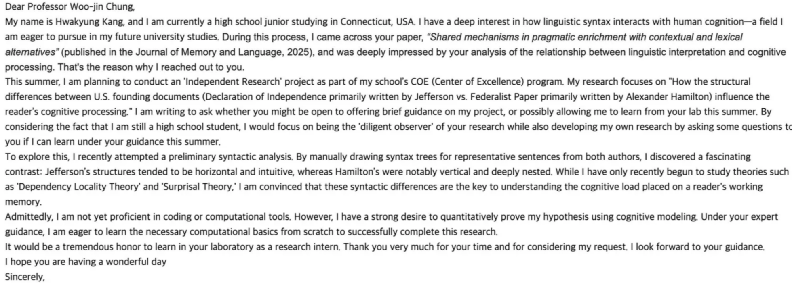
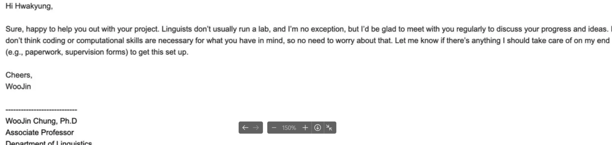
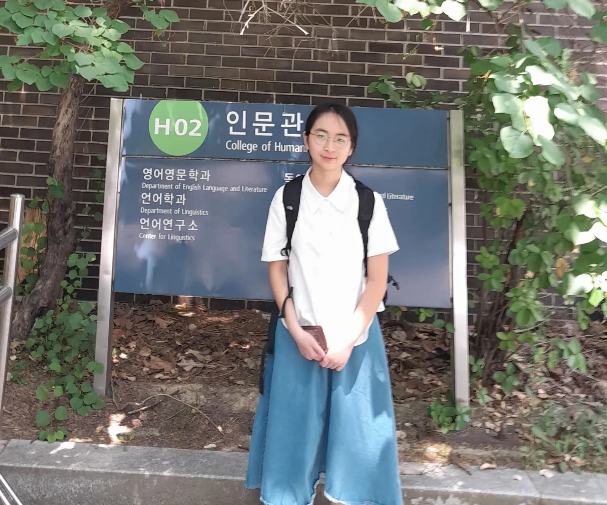
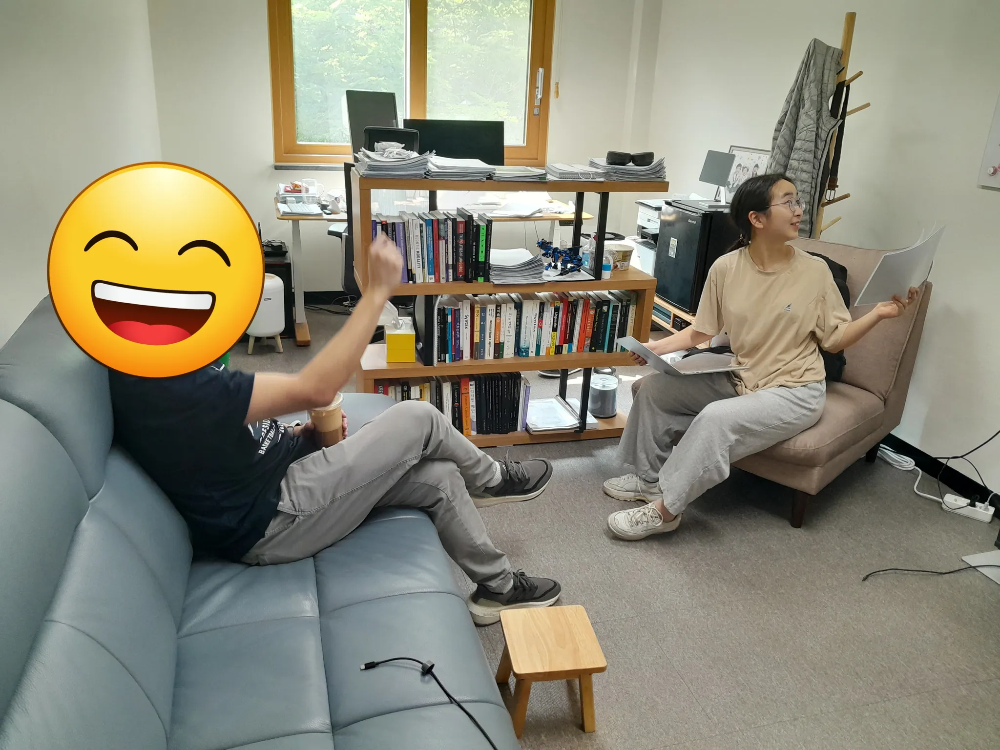
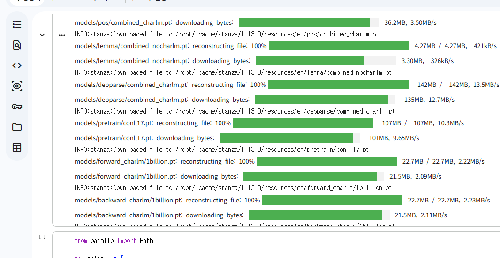

My linguistics internship
A three-week research internship in linguistics with Professor WooJin Chung of Seoul National University.
In ninth grade, I chose the Social Justice track in my school’s COE program. The program allows students to study one area more deeply, and I have taken classes related to social justice since then. The COE program itself is not required for graduation, but an internship is required to complete the program. In the spring, my school asked me to submit my internship plan. I had not decided what to do yet, so I started looking for an idea and someone who could guide me.
I was taking AP U.S. History then, and I was very interested in Alexander Hamilton. I wanted to look more closely at the way he wrote. This gave me the idea of comparing the Declaration of Independence with Hamilton’s writings in The Federalist Papers. I wondered if their sentence structures could affect how readers understood ideas such as equality, justice, and government.
My earliest idea was to draw syntax trees for sentences written by Thomas Jefferson and Alexander Hamilton. I read about X-bar theory and thought about asking a professor who studied syntax. While searching, I became interested in more than drawing tree diagrams. I wanted to see if I could also use computational tools to study sentence structure and language processing.
I then found Professor WooJin Chung of Seoul National University. On April 20, I sent him an email about my COE requirement, my interest in Hamilton, and my early research idea. I asked if he could guide me with the project.


Professor Chung agreed to meet with me regularly and guide the project. He also explained that linguists do not usually run a laboratory in the same way as some science fields.
Before the internship began, I studied AP Statistics through Khan Academy. I also took Programming for Everybody and Python Data Structures on Coursera. These courses gave me some basic knowledge of statistics and Python, but I did not yet know how to use them for linguistic research.
My history teacher lent me two books containing the texts I wanted to study. I packed both books in my suitcase and brought them to Korea.
I first selected ten sentences from the Declaration of Independence and ten from The Federalist Papers. I later narrowed them down to six pairs for closer comparison. I tried making syntax trees and studied basic ideas such as nodes, branches, hierarchy, and tree depth. I also compared the depth of the trees, although I was not sure whether all of my analysis was correct.
My three-week internship
The internship lasted for three weeks, from June 8 to June 26, 2026. During the internship, I listened to research discussions, studied unfamiliar topics, and kept daily notes. I also brought questions and early work from my independent project to Professor Chung and received his guidance.


Notes from my internship journal
Week 1: June 8–12
Monday, June 8
I learned that modern semantics developed partly from logic and mathematics. I also learned the difference between theoretical and experimental semantics. Theoretical research develops ideas about meaning, while experimental research tests how people actually understand language. I was surprised that a person’s judgment about whether a sentence sounds meaningful can also become important data.
Tuesday, June 9
I learned why experimental methods have become more important in linguistics and cognitive science. Researchers do not only develop theories. They also study how people respond in actual tasks. I also began thinking about how meaning can be studied separately from the particular language or writing system used to express it. This idea was difficult for me, but it made me wonder whether meaning can exist before it is expressed through language.
Wednesday, June 10
I learned that the frequency of a word in a corpus does not always explain how people understand its meaning. Numbers can show a pattern, but they may not explain why the pattern exists. At the same time, statistical methods can help researchers compare people’s responses and examine relationships between different behaviors. I began to see linguistics as a field that connects science and the humanities.
Thursday, June 11
I learned that new evidence can cause researchers to revise an existing theory. This seemed especially important because it is difficult to directly observe how a person understands something. I also learned about reasoning fallacies and behavioral experiments that study why people sometimes choose an answer that is not logically correct. I became interested in how researchers could study human irrationality through logical methods.
Friday, June 12
I learned about different ways to study the relationship between language and reasoning. In some experiments, researchers may try to control for differences in cultural background so that they can focus on a particular type of reasoning. However, this does not mean that culture is never important. At the end of the week, I kept thinking about one question: Are human beings mainly logical or irrational? I did not think there was a simple answer because people may not always know when they are reasoning and when they are only guessing.
Week 2: June 15–19
Monday, June 15
I learned about the conjunction fallacy, in which people may choose an answer that sounds more believable even when it is less likely according to the rules of probability. Language can also affect which explanation or behavior people prefer. I liked this topic because it showed that making an illogical judgment is not unusual. It made me think that understanding these limits may help us understand and forgive ourselves more easily.
Tuesday, June 16
I learned that the importance of culture may differ depending on the type of reasoning being studied. Some perceptual processes may be shared by many people, while judgments about values can be more affected by culture. This made me think that institutions should recognize the limits and differences in human reasoning, especially when trying to become more inclusive. I also thought about how people create meaning through language, history, music, literature, and science.
Wednesday, June 17
I learned that research about reasoning may offer ideas for public policy, but academic suggestions are not always accepted because political and social situations are complicated. We also discussed how linguistic research has affected education. For example, dialects were often treated negatively in the past, but they are now studied as natural forms of language connected to different regions. This reminded me of learning about Korean dialects in elementary school.
Thursday, June 18
I learned that law and semantics both use logical structures, but legal interpretation also depends strongly on social and historical context. We discussed how linguistics may help people examine political arguments, misleading information, and the structure of persuasion. This made me think that learning about language could support critical thinking. I was interested in seeing how linguistic research could connect to social questions instead of remaining only an abstract subject.
Friday, June 19
We discussed the relationship between linguistics and artificial intelligence. Linguistic research has helped with the development of language models, while newer AI tools can help researchers organize information and perform some kinds of analysis. However, I wondered whether copying the behavior of understanding is the same as actually understanding. I also thought that the personal context of a human creator still matters in areas such as art and music.
Week 3: June 22–26
Monday, June 22
We discussed the limits of large language models in reasoning. Both human reasoning and AI reasoning are still difficult to fully explain. This made me think more seriously about my interest in studying cognitive science in the future. I wanted to continue asking questions such as what reasoning is, what meaning is, and how we know that we understand something.
Tuesday, June 23
We discussed how education may need to change as students use AI more often. I thought colleges might use more discussions or verbal assessments because these require students to explain their thinking directly. We also talked about why AI translation and the study of meaning are not exactly the same. I began to think that protecting people’s ability to think independently would become more important as AI developed.
Wednesday, June 24
I learned that AI researchers and linguists do not always ask the same questions. AI researchers may focus on building systems that reproduce linguistic behavior, while linguists may focus more on explaining how language and meaning are structured. I also learned about pragmatics, which studies how context and a speaker’s intention affect meaning. I became interested in how pragmatics might be useful in counseling, education, and criminal investigations.
Thursday, June 25
We discussed how online communication can make it harder to understand a speaker’s intention because text does not show tone of voice clearly. I also learned that words such as must and should can be studied in relation to judgment and decision-making. We talked about the Turing test and whether it is still a useful way to evaluate human-like behavior as technology changes. I wondered whether the test would also need to change because human communication continues to change.
Friday, June 26
I noticed that AI-generated writing often sounded more neutral and more like a summary than writing by people. This made me think about the difference between processing information and understanding its context. We also discussed rhetoric, confirmation bias, and why people may believe information that supports what they already think. I do not usually believe conspiracy theories, but I became curious about why they have continued to appear throughout history.
Project work during the internship
Along with keeping the daily journal, I continued working on my Hamilton–Jefferson project during the internship. Professor Chung helped me understand unfamiliar linguistic ideas and find tools that I could use to study my question.
I learned about Stanza, which could analyze dependency relationships between words, and minicons, which could calculate surprisal using a language model. I had never used these tools before. I searched for instructions, tested code in Google Colab, and checked whether the results made sense for the sentences I had selected.
The tools could produce numbers, but I still had to understand what the numbers meant and whether they could answer my original question. This work later became the starting point for my independent research paper.

Final reflection
Before this internship, I mostly thought about linguistics through syntax trees and the structure of sentences. During the three weeks, I learned that linguistics also asks larger questions about meaning, reasoning, judgment, and communication. Some ideas were difficult for me, but they gave me many questions that I wanted to continue thinking about.
I especially remembered the discussions about confirmation bias and pragmatics. Confirmation bias reminded me of dictatorships I had studied in AP World History because leaders may continue to believe information that supports what they already think. Pragmatics also made me think about misunderstanding and hate speech in online communication, where people cannot always hear the speaker’s tone or clearly understand the intention.
The internship also helped me move forward with my own project. I began learning new tools, but I also learned that getting a number from a program did not automatically mean that I understood it. I needed to ask what the number measured and whether it could really answer my question. This experience made me more interested in studying language, psychology, and reasoning together.
I am thankful to Professor Chung for giving me the chance to learn from the research discussions and for guiding my questions and early project work.